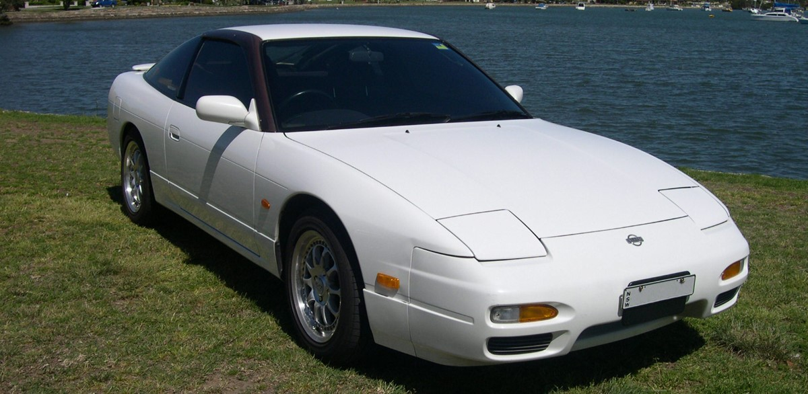
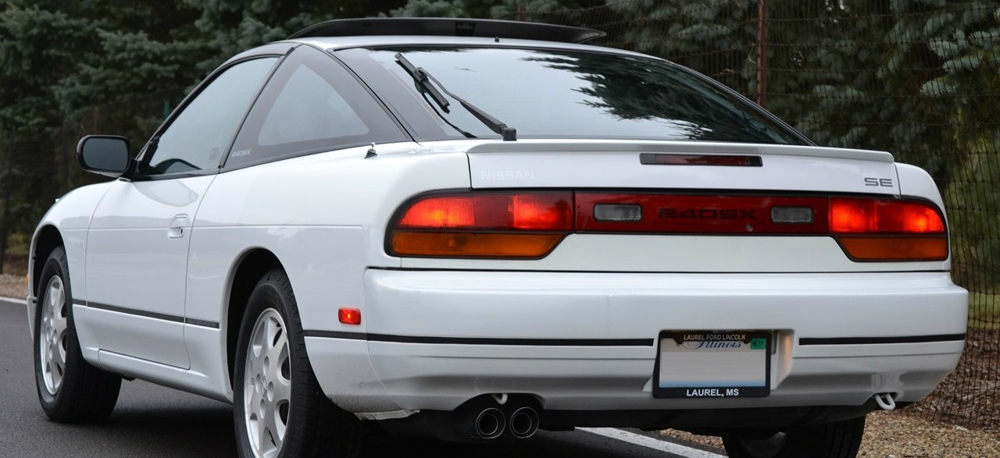
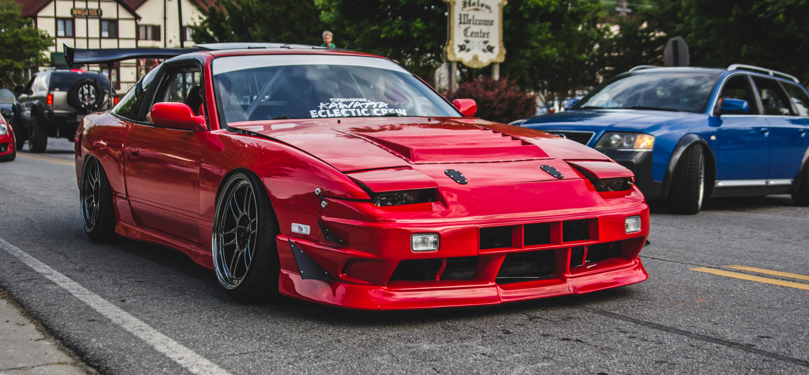

Nissan 180SX
Nissan 180SX выпускался в кузове фастбэк, базировался на шасси S13 платформы S и продавался только в Японии (однако в некоторых странах он продавался под названием 240SX). Модель продавалась как родственная модель Nissan Silvia с 1989 по 1998 год. Silvia S13 была снята с производства в 1993 году, в то время как 180SX продолжал производиться, и компания Nissan продолжала продавать его еще довольно долго, вплоть до появления следующего поколения Silvia. 180SX отличался от Silvia S13 поднимающимися фарами головного света и кузовом типа фастбек с поднимающейся задней дверью. Спецификации и оборудование были одинаковыми, однако двигатель CA18DET не предлагался.
Название 180SX указывало на объем используемого двигателя CA18DET — 1,8 литра. Однако в 1991 году двигатель был заменен 2-литровым, предлагалось 2 модификации: атмосферный SR20DE и турбированный SR20DET. В то время как новый двигатель располагал большим объемом, название модели "180SX" изменять не стали. Модификации кузова 180SX и родственных моделей поставлялись в Северную Америку под названием 240SX в кузове фастбэк.
Nissan 180SX тюнинг:
